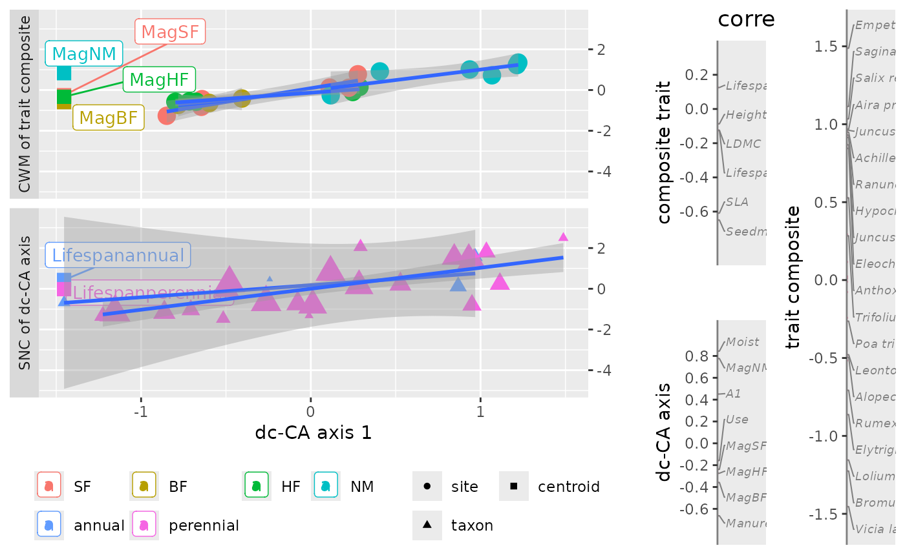

Plot a single dc-CA axis with CWMs, SNCs, trait and environment scores.
Source:R/plot.dcCA.R
plot.dcca.Rdplot.dcca plots the CWMs and SNCs of a dc-CA axis against this axis,
with optional centroids and colors for groups of sites and/or species if
available in the data.
Usage
# S3 method for class 'dcca'
plot(
x,
...,
axis = 1,
gradient_description = "correlation",
envfactor = NULL,
traitfactor = NULL,
nspecies = 20,
species_groups = NULL,
widths = c(5, 1, 1),
newnames = NULL,
facet = TRUE,
remove_centroids = FALSE,
with_lines = 2,
flip_axis = FALSE,
expand = 0.2,
formula = y ~ x,
verbose = TRUE
)Arguments
- x
results from
dc_CAof classdcca.- ...
unused.
- axis
the axis number to get (default 1).
- gradient_description
character or 2-character vector for the trait and environmental gradient, respectively specifying what to plot in the vertical line plots to describe the dc-CA axis (trait and environmental gradients). Default:
correlationfor intra-set correlations of both sets of variables with their dc-CA axis. Other values are:c("weights", "tvalues", "inter_set_correlation")for regression weights, t-values and inter-set correlation, being the correlation of the SNCs and CWMs with the traits and environmental variables, respectively."regression"is an alias for"weights".- envfactor
name of row factor to display as color and lines in the CWM plot (default
NULL). The default extracts the factor from the environmental model. If set toNA, no additional coloring and lines are displayed inplot.dcca. The parameter sets thegroupsvariable in theCWM_SNCdata frame of the return value/in the plot.- traitfactor
name of column factor to display as color and lines in the SNC plot (default
NULL). The default extracts the factor from the trait model. If set toNA, no additional coloring and lines are displayed inplot.dcca. The parameter sets thegroupsvariable in theCWM_SNCdata frame of the return value/in the plot.- nspecies
integer. Default
20for including a vertical species plot with at mostnspeciesthat have the highest contribution.- species_groups
name of a variable in
dataTraitsofdc_CA. DefaultNULLfor no grouping. Species groups are colored differentially.- widths
relative widths of the CWM-SNC plot, the correlation/weight plot and the species plot. (see
grid.arrange). Defaultc(5, 1, 1).- newnames
a list with two elements: names for traits and for environmental variables, default
NULLfor names derived from the result ofscores.dccawithtidy = TRUE.- facet
logical. Default
TRUEfor CWMs and SNCs plots in separate panels. This parameter changes the position of the centroid names (from left to right for the environmental centroids). Iffacet = FALSEandwith_lines = TRUE, the line fits ignore groups of species and of sites.- remove_centroids
logical to remove any centroids from the plot data (default
FALSE). Can be a two-vector, e.g.c(TRUE, FALSE)to remove only the trait centroids.- with_lines
integer values (0,1,2). Default
2for straight lines through groups of points, with confidence intervals around the lines.with_lines=1drops the confidence intervals andwith_lines=0suppresses the lines.- flip_axis
flip the direction of the axis? (default FALSE).
- expand
amount of extension of the line plot (default 0.2).
- formula
formula to use by ggplot geom_smooth (default y~x).
- verbose
logical. Default
TRUEfor plotting the result.
Details
The current implementation does not distinguish groups of points, if there
are two or more factors specified in the model.
If you want to label one trait factor, specify
traitfactor="yourfactor" and similarly
specify envfactor="yourfactor" for your environmental factor.
No lines are plotted if a single factor defines a model.
If you want to set new names, look at the names with all arguments default,
i.e. myplot <- plot(x), and then consult
myplot$nameList$newnames for the order of the names of traits and
environmental variables. Note that covariates should not be in the list of
names. Contribution (in the definition of species selection in
nspecies) is defined (as in CA) as the total species abundance in
the (possibly, closed) data multiplied by the square of the score on
the axis.
If the plot.dcca returns the error "Error in grid.Call",
enlarge the plotting area or use verbose = FALSE and assign the
result.
Examples
data("dune_trait_env")
# rownames are carried forward in results
rownames(dune_trait_env$comm) <- dune_trait_env$comm$Sites
# must delete "Sites" from response matrix or data frame
Y <- dune_trait_env$comm[, -1] # must delete "Sites"
out <- dc_CA(formulaEnv = ~ A1 + Moist + Use + Manure + Mag,
formulaTraits = ~ SLA + Height + LDMC + Seedmass + Lifespan,
response = Y,
dataEnv = dune_trait_env$envir,
dataTraits = dune_trait_env$traits,
verbose = FALSE)
dat <- getPlotdata(out)
names(dat)
#> [1] "CWM_SNC" "trait_env_scores" "oldNameList" "newNameList"
names(dat$CWM_SNC)
#> [1] "dcCA1" "score" "label" "CWM-SNC"
#> [5] "weight" "type" "points" "sizeweight"
#> [9] "smoothweight" "xforsmooth" "groups" "names"
#> [13] "centroidnames"
levels(dat$CWM_SNC$groups)
#> [1] "SF" "BF" "HF" "NM" "annual" "perennial"
plot(out)
